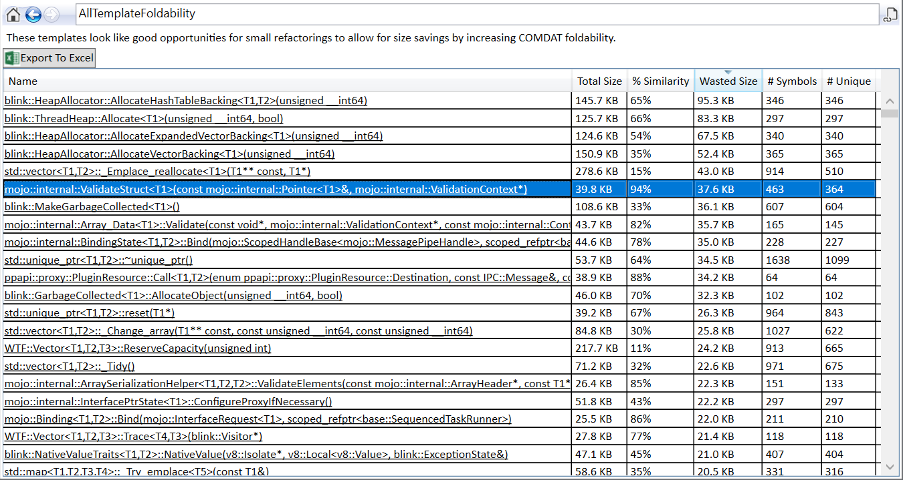
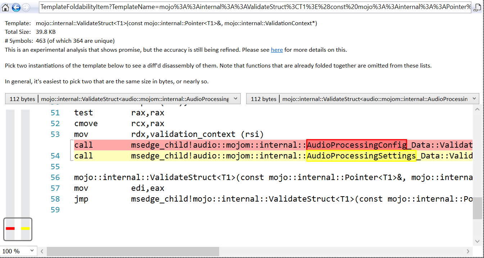
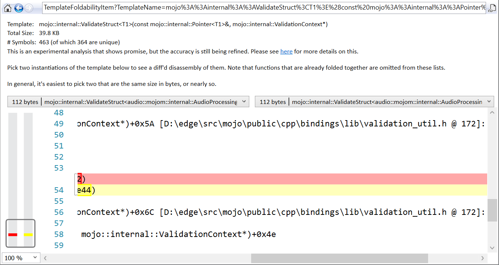

One of the heuristic analyses that SizeBench can do is to look for C++ templated functions that are ripe for opportunities because they are 'almost COMDAT-foldable'.
Suppose you have this template:
template
void MyCoolTemplate(T y, bool shouldBeEvenCooler)
{
if(shouldBeEvenCooler) { cout << "I'm even cooler!"; return; }
cout << y->someField;
}
One question you may have is just "how much size does MyCoolTemplate<T> contribute to my binary?" - as this is not at all obvious from reading the code. It depends on many factors, such as how many times the template was instantiated, and whether the linker's Identical COMDAT Folding (ICF) feature was able to fold any of these instantiations together.
Imagine you use MyCoolTemplate<Type1>, MyCoolTemplate<Type2>, and MyCoolTemplate<Type3> in your binary - that's 3 instantiations. So the compiler will spit out 3 copies of this code, one per type T that was used as a template parameter. Each of them contains some bytes of assembly code. Then, the linker will come in later and fold together any of these that have identical bodies. But, what happens if the bodies are 95% the same bytes of assembly code, with a small difference due to the type T? Then no folding occurs, and you "waste" 95% of each copy by triplicating it. Bummer.
So to add to the example above, imagine that Type1, Type2, and Type3 look like this:
class Type1 {
public:
int someField;
bool someFlag;
};
class Type2 {
public:
bool someFlag;
int someField;
bool someOtherFlag;
};
class Type3 {
public:
bool yetAnotherFlag;
int someField;
};
Then what'll happen is MyCoolTemplate<Type2> and MyCoolTemplate<Type3> will fold together perfectly as the offset of "someField" is identical, so the offset that gets put into the assemlby is the same. But MyCoolTemplate<Type1> will not fold, since someField is at another offset so the number of bytes that must be offset from "y" to find "someField" is different.
Again, this is extremely difficult to see from just reading code as you must know the layouts of every type involved, the layout of any vtables called, the order of the vfptrs, and so on.
Enter SizeBench's Template Foldability analysis! SizeBench will examine all templated functions in the binary, see which ones fold together, and tell you a few things about each template:
Below we'll walk through an example found in an open source part of Chromium-based Edge.
After opening this binary in SizeBench and clicking on Template Foldability, this is what we see:
The highlighted row is the template we'll look at. As you can see from the screenshot, SizeBench says this templated function takes up around 40 KB in the binary, and each copy is 94% similar to the others - so 37.6 KB is considered "waste" in that it's duplicated bytes of code. This is across 463 copies of the template being instantiated, and after all folding 364 of them ended up being unique.
Note that SizeBench cannot tell you the template's full name as this is not in the debugging information, so "<T1>" is used to mean "the first template parameter." The names throughout the Template Foldability analysis are all anonymized like this with T1, T2, etc.
After clicking on that template we drill in to see this page:
This shows a diff of the disassembly from two instantiations of the template, each of which is 112 bytes (you can see that in the drop-down ComboBoxes). You can pick any two instantiations that you like, but by default the first two that match in size are chosen.
The disassembly is identical for the first 53 lines, so this view automatically scrolled to line 54 to show us that this single "call" instruction is the only thing different between these two 112-byte template instantiations. If we want to see exactly which line of source code this line of assembly came from, we can just scroll to the right to see this:
So we can see that validation_util.h line 172 is the line that is doing something dependent on type T. Let's take a look at validation_util.h as it was at this time, for this templated function. It looked like this:
163 template <typename T>
164 bool ValidateStruct(const Pointer<T>& input,
165 ValidationContext* validation_context) {
166 ValidationContext::ScopedDepthTracker depth_tracker(validation_context);
167 if (validation_context->ExceedsMaxDepth()) {
168 ReportValidationError(validation_context,
169 VALIDATION_ERROR_MAX_RECURSION_DEPTH);
170 return false;
171 }
172 return ValidatePointer(input, validation_context) &&
173 T::Validate(input.Get(), validation_context);
174 }
Wow, this template is only 5-8 lines long, depending on how you like to count them. Let's call it 8. Yet it takes 40 KB of the binary! We can see there's some validation code at the top to instantiate a ScopedDepthTracker, check if it exceeds a max depth, report an error, and so on - all this code is identical for each of the "T" types used to expand this template. The real difference is on line 172 where the T::Validate function is called. It makes sense that this is unique to each type T as it's a direct call - perhaps in some cases it can inline and end up with identical bytes, so some copies fold, but in general this does not fold together.
What can be done about this? Let's take a look in the next section.
Let's continue with the example above - how can we fix this, or at least improve it? There's a few techniques you could use:
The actual change done by Emily Andrews on the Edge team can be seen here. Now the template looks like this:
171 template <typename T>
172 bool ValidateStruct(const Pointer<T>& input,
173 ValidationContext* validation_context) {
174 ValidationContext::ScopedDepthTracker depth_tracker(validation_context);
175 return ValidateParams(input, validation_context) &&
176 T::Validate(input.Get(), validation_context);
177 }
And ValidateParams looks like this:
149 template <typename T>
150 bool ValidateParams(const Pointer<T>& input,
151 ValidationContext* validation_context) {
152 if (validation_context->ExceedsMaxDepth()) {
153 ReportValidationError(validation_context,
154 VALIDATION_ERROR_MAX_RECURSION_DEPTH);
155 return false;
156 }
157 return ValidatePointer(input, validation_context);
158 }
In this case, the ValidateParams template is not marked as __declspec(noinline), though that would be my recommendation in cases like this in case the inliner gets more aggressive later. In this case, it happened to not inline, so the ValidateStruct templates shrunk a lot per copy, and the ValidateParams<T> template perfectly folded down to one copy.
There are a few more examples of using Template Foldability that are internal to Microsoft, unfortunately not in OSS'd code. If you are a Microsoft employee, you can visit here: MS Internal Template Foldability examples.
If you land any changes from using this analysis, please send them my way so I can add them here for others to learn from them!